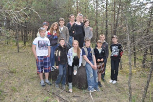
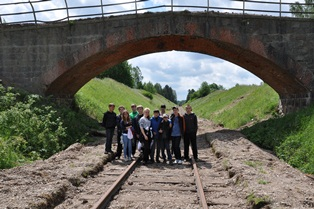
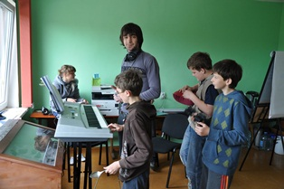
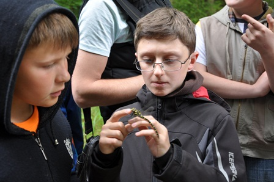
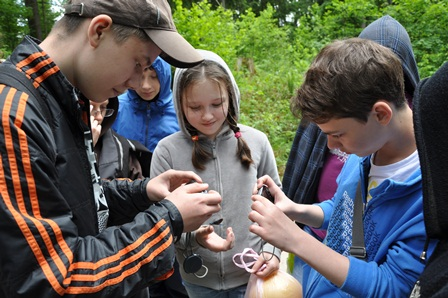
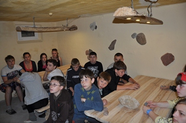
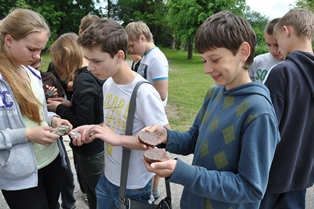

лингвистический лагерь"
С 1 по 10 июня 2012 года в посёлке Краснолесье на базе Виштынецкого эколого-исторического музея состоялся «Молодёжный этнокультурный лингвистичсекий лагерь», организованный некоммерческим партнёрством "Немецко-Русский дом"
В одном из самых живописных уголков Калининградской области - на территории Роминтской пущи, в поселке Краснолесье - завершил работу молодёжный этнокультурный лингвистический лагерь.
Организатор лагеря -некоммерческое партнёрство "Немецко-Русский дом" - на протяжении более 15 лет проводит летние оздоровительные мероприятия с компонентами тренинга по этнической идентичности российских граждан немецкой национальности. За этот период "Немецко-Русский дом" организовал отдых более 3000 детей и подростков из семей российских немцев и других национальностей. В этом году помощь в проведении лагеря оказана из средств областного бюджета.
В молодёжном лагере смогли отдохнуть 20 детей, приехавших из разных уголков нашей области - из городов Советск, неман, Гусев, из калининграда, из посёлков Чистые Пруды, Бабушкино Нестеровского района, посёлка красноярское Озёрского района. Все они имеют немецкие корни или живут по соседству с семьями российских немцев.
Организатор лагеря -некоммерческое партнёрство "Немецко-Русский дом" - на протяжении более 15 лет проводит летние оздоровительные мероприятия с компонентами тренинга по этнической идентичности российских граждан немецкой национальности. За этот период "Немецко-Русский дом" организовал отдых более 3000 детей и подростков из семей российских немцев и других национальностей. В этом году помощь в проведении лагеря оказана из средств областного бюджета.
В молодёжном лагере смогли отдохнуть 20 детей, приехавших из разных уголков нашей области - из городов Советск, неман, Гусев, из калининграда, из посёлков Чистые Пруды, Бабушкино Нестеровского района, посёлка красноярское Озёрского района. Все они имеют немецкие корни или живут по соседству с семьями российских немцев.


Молоды не только участники лагерной смены (школьники от 12 до 15 лет), но и помощники - волонтеры, члены молодёжной организации при Региональной национально-культурной автономии российских немцев Калининградской области. Главными направлениями в работе лагеря были изучение немецкого языка и истории российских немцев. Ежедневно ребята в игровой форме изучали немецкий язык, язык своих предков. Тематика занятий была широкой - от темы "Знакомство" до изучения рецептов домашней немецкой кухни. Да и повод для этого был. В этом году лагерь особенный - он посвящен 250-й годовщине издания императрицей Екатериной Великой Манифеста, позволившего иностранцам селиться в России. Именно с тех пор в России появилось много немцев, сыгравших заметную роль в истории нашего государства. Участники лагеря познакомились с отдельными страницами истории этого российского этноса, с именами выдающихся россиян-немцев. В день закрытия лагеря ребята для своих родителей с гордостью исполняли песни на немецком языке, выученные за время пребывания в лагере.
Оправдался и выбор места проведения лагеря. Десять дней лагерной смены с 1 по 10 июня прошли на базе Виштынецкого эколого-исторического музея, расположенного в посёлке Краснолесье, Нестеровского района Калининградской области. Директор музея, кандидат биологических наук, Алексей Александрович Соколов, по совместительству руководитель лагеря, провел увлекательные экскурсии к природным достопримечательностям региона. Особенно ребятам понравилось искать сокровища роминтских гномов и узнавать геологическую историю поселка Краснолесье, находить следы ледникового периода и открывать для себя красоту камня. И пусть погода не баловала ребят солнцем, походы в Роминтский лес ребята будут вспоминать с удовольствием.
Но главные итоги лагеря - это новые впечатления, новые знания и новые друзья. Друзьями стали не только сами участники лагеря (об этом свидетельствует оживленная переписка ребят в "Контакте", где, кстати, можно прочитать и отзывы о лагере), но и ребята из поселка Краснолесье. В преддверии чемпионата Европы по футболу ребята провели свой местный чемпионат. Победила дружба!




Контактное лицо:
Артюков Андрей Михайлович,
463464, artjukow@drh-k.ru
Артюков Андрей Михайлович,
463464, artjukow@drh-k.ru

1 -10 июня 2012 г.